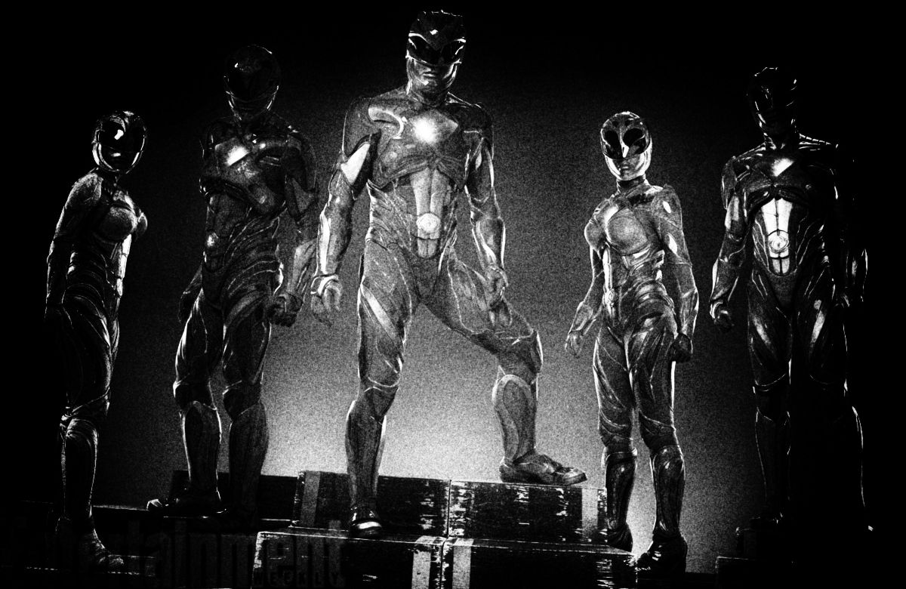
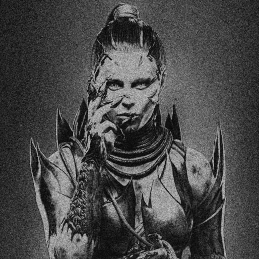
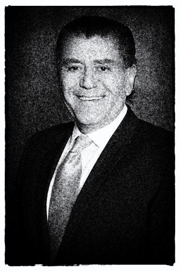
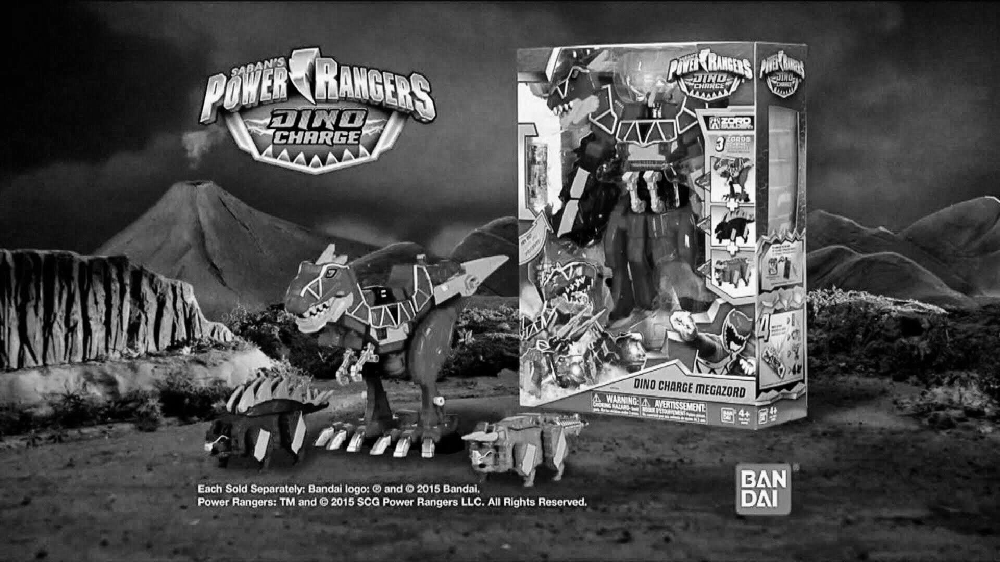

Several locals have reported seeing a new group of Power Rangers around Angel Grove. A single alleged photo has been captured though many residents insist it has been doctored.
"It's just a single low-lighting shot," said Angel Grove resident Farkas "Bulk" Bulkmeier, "It's impossible to tell where they're standing. Plus, if there were new Rangers coming, I would be first to know." Incidentally, Mr. Bulk claims to have been "close, personal friends" with many of the Power Rangers.
Previous to the possible appearance of the new Rangers local resident Eugene "Skull" Skullovitch reported discovering the return of long time World Domination hopeful Rita Repulsa. At the time of the incident residents almost unanimously wrote the image off as a fake.
"It's not that I think Skull faked the photo of Rita," speculated Bulk, who is a long time collaborator with Skull, "It's more likely he ran into a cosplayer and took her too seriously." Mr. Bulk scratched his chin before adding, "He can be gullible. I was always the brains of the operation. It's not even much of a likeness. That costume looks nothing like Rita."
Opinions are increasingly mixed following the snap of the Rangers, but the recently quiet town of Angel Grove remains remarkably undisturbed by any potential threats. Local martial arts celebrity Tommy Oliver offered his own opinons on the matter.
"If Rita comes back, or if there's a new threat, there will always be Rangers who will rise to the occasion. I sleep well knowing that, and I think the rest of the citizens of Angel Grove feel the same. Of course, if there is a new group of Rangers, I doubt they can compete with the old ones."
Actor and former child star James Van Der Beek recently reported he was the second Red Ranger. Additionally, the lead of 90s hit teen soap "Dawson's Creek" claims to be working with both Rita Repulsa and the Machine Empire. It's unclear at this time if Van Der Beek still has a Power Coin.
In a statement released to "The Mighty Mornin Times" Van Der Beek attempted to justify his betayal.
"Why do you think teens were chosen to protect the universe? It's simple: they're naive. They don't ask questions. Not unlike machines, really. The Rangers were on the losing side, and I was not about to get caught in their fire."
Many Rangers have gone missing in recent years, prompting frequent but unsubstantiated rumors of the Rangers going into hiding or even dying in battle.
Despite these claims skepticism remained high. The secretive nature of the Power Rangers, combined with virtually no recent monster activity, led many to speculate they had simply "moved on" following the end of the Machine War.
"The battle continues in secret. Most of the Rangers are dead, and I'm going to be next to Rita, Zed, and the Machines at the throne," explained Van Der Beek, adding, "I'm not gonna wait for my life to be over."
Dr. Haim Saban of the "Ranger Institute" in Reefside, CA made claims that the Power Rangers are actually Japenese imports with financial agendas.
"Traditionally we have thought of the Rangers as local Super Heroes. That's not exactly true. They first appeared in Japan in 1992."
Dr. Saban alleges that while the Rangers may have been heroic, their goals were not purely philanthropic.
"They came to the US for the opportunity it presented in increased profit margins. They were wildly successful."
Saban goes so far as to claim this success is in fact the reason for the Rangers' continued presence in US. "They stuck around much longer than originally intended. They made millions."
When asked if he was aware of any other heroes that came to the US for financial benefit, Saban provided several examples.
"Absolutely. The 'Super Human Samurai Cyber Squad,' the 'VR Troopers.' All imported to try to replicate the Rangers' success."
Continued on page A7...
Advertisement
